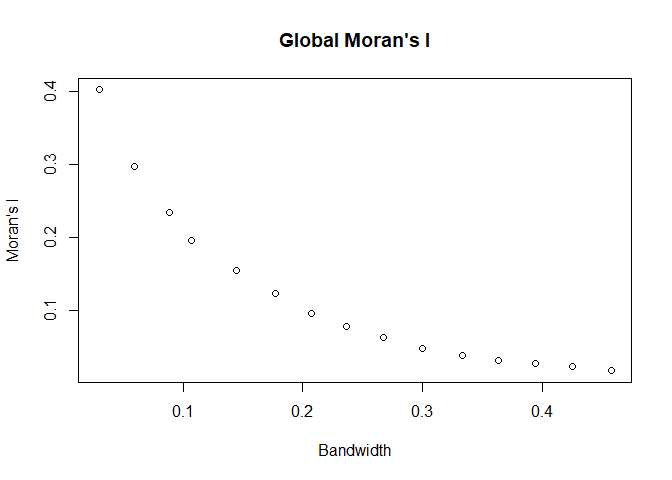

Among the exploratory spatial data analysis tools, there are indicators of spatial association, which measure the degree of spatial dependence of analysed data and can be applied to quantitative data. Another procedure available is geostatistics, which is based on the variogram, describing quantitatively and qualitatively the spatial structure of a variable. We present the implementation of the Global Spatial Indicator Based on Variogram – G-SIVAR in R software, which uses the concept of the variogram to develop a global indicator of spatial association. This method was proposed by Cláudia Cristina Baptista Ramos Naizer (ORCID: 0000-0001-8326-7082) and Cira Souza Pitombo (ORCID: 0000-0001-9864-3175). The code was developed by Jorge Ubirajara Pedreira Junior (ORCID: 0000-0002-8243-5395) and David Souza Rodrigues (ORCID: 0000-0002-8334-5260)
library(lctools); library(scales); library(sp); library(gstat); library(reshape2);
library(dplyr); library(bbmle); library(ggplot2); library(tinytex); library(knitr)Obs: specify accordingly to match file directory.
setwd("C:/Users/Jorge/Documents/g-sivar") Obs: Choose either Centro SP (0b1) or Cidade Ficticia (0b2) datasets to calculate the G-SIVAR.
dados <- read.table("2.CentroSP.txt",h=T)#dados <- read.table("1.CidadeFicticiaBin.txt",h=T)
#nomes <- names(dados); nomes[2:3] <- c('x','y'); colnames(dados) <- nomesx_nor = rescale(dados$x)
y_nor = rescale(dados$y)#gd <- SpatialPointsDataFrame(coords=cbind(dados$x,dados$y),
# data = as.data.frame(dados$Avg_Tot_auto))
gd <- SpatialPointsDataFrame(coords=cbind(x_nor,y_nor),
data = as.data.frame(dados$Avg_Tot_auto))#gd <- SpatialPointsDataFrame(coords=cbind(dados$x,dados$y),
#data = as.data.frame(dados$ESCOLHA))
#gd <- SpatialPointsDataFrame(coords=cbind(x_nor,y_nor),
#data = as.data.frame(dados$ESCOLHA))ev <- variogram(unlist(gd@data) ~ 1, data = gd, alpha=c(0,30,60,90,120,150),tol.hor = 22)
tv <- fit.variogram(ev, vgm(c("Exp", "Sph", "Gau"))) max_dir = as.numeric(names(which.min(tapply(ev$gamma,ev$dir.hor,max)))) ort_dir = abs(ifelse(90 + max_dir >= 180, max_dir - 90, max_dir + 90)) max_dir and ort_dir to calculate anisotropy ratio:ev_max_dir <- variogram(unlist(gd@data) ~ 1, data = gd, alpha = max_dir,
tol.hor = 22)
ev_ort_dir <- variogram(unlist(gd@data) ~ 1, data = gd, alpha = ort_dir,
tol.hor = 22)
tv_max_dir <- fit.variogram(ev_max_dir, vgm(c("Exp", "Sph", "Gau")))
tv_ort_dir <- fit.variogram(ev_ort_dir, vgm(c("Exp", "Sph", "Gau")))anis_ratio = tv_ort_dir$range[2]/tv_max_dir$range[2]sill_sim_c <- sill_sim/mean(sill_sim)sill_sim_c via Maximum Likelihood Estimation (MLE):m <- mle2(sill_sim_c ~ dnorm(mean=mu,sd=sd),start=list(mu=0.1,sd=0.1),
data=data.frame(sill_sim_c))tv_sc <- vgm(psill = tv$psill[2]/sum(tv$psill), model = as.vector(tv$model[2]),
range = tv$range[2], nugget = tv$psill[1]/sum(tv$psill),
anis = c(max_dir,anis_ratio))var_func <- variogramLine(tv_sc, dist_vector = ev$dist[ev$dir.hor==max_dir])moran <- moransI.v(gd@coords, ev$dist[ev$dir.hor==max_dir],
unlist(gd@data), family='fixed')
moran <- as.data.frame(moran)
names(moran)[3] <- "Morans_I"df = data.frame(dist = ev$dist[ev$dir.hor==max_dir], Morans_I = moran$Morans_I,
pv_Morans_I = moran$`P-value res.`, G_SIVAR = var_func$gamma,
pv_G_SIVAR = pnorm(var_func$gamma, m@coef[1], m@coef[2]),
alpha_0.05 = rep(qnorm(0.05, m@coef[1], m@coef[2]),nrow(moran)))
kable(df, caption = "Moran's I x G-SIVAR")| dist | Morans_I | pv_Morans_I | G_SIVAR | pv_G_SIVAR | alpha_0.05 |
|---|---|---|---|---|---|
| 0.0299702 | 0.4015914 | 0 | 0.6631591 | 0.0000000 | 0.9349556 |
| 0.0598250 | 0.2970901 | 0 | 0.7408862 | 0.0000000 | 0.9349556 |
| 0.0886175 | 0.2336791 | 0 | 0.7988081 | 0.0000002 | 0.9349556 |
| 0.1074084 | 0.1957342 | 0 | 0.8294313 | 0.0000080 | 0.9349556 |
| 0.1442869 | 0.1555987 | 0 | 0.8766439 | 0.0009058 | 0.9349556 |
| 0.1769859 | 0.1231298 | 0 | 0.9074510 | 0.0096310 | 0.9349556 |
| 0.2075116 | 0.0967634 | 0 | 0.9292254 | 0.0367458 | 0.9349556 |
| 0.2363631 | 0.0788725 | 0 | 0.9450748 | 0.0824241 | 0.9349556 |
| 0.2670135 | 0.0628922 | 0 | 0.9580433 | 0.1443480 | 0.9349556 |
| 0.2998950 | 0.0483075 | 0 | 0.9685720 | 0.2133871 | 0.9349556 |
| 0.3330529 | 0.0384230 | 0 | 0.9765158 | 0.2763118 | 0.9349556 |
| 0.3636959 | 0.0327746 | 0 | 0.9820595 | 0.3250452 | 0.9349556 |
| 0.3942781 | 0.0281629 | 0 | 0.9862873 | 0.3644007 | 0.9349556 |
| 0.4256325 | 0.0237423 | 0 | 0.9895896 | 0.3961956 | 0.9349556 |
| 0.4575554 | 0.0180395 | 0 | 0.9921361 | 0.4212060 | 0.9349556 |
df_melt <- melt(df %>% select(dist,Morans_I,G_SIVAR,alpha_0.05), id = "dist")
ggplot(data = df_melt, aes(x = dist, y = value, colour = variable, linetype = variable)) +
geom_line(aes(linetype=variable)) + geom_point() +
scale_linetype_manual(values=c("solid","solid","dotted")) +
scale_color_manual(values=c('black','blue','red')) +
theme(legend.title = element_blank())Plot of Moran’s I, G-SIVAR & sig. level for the G-SIVAR